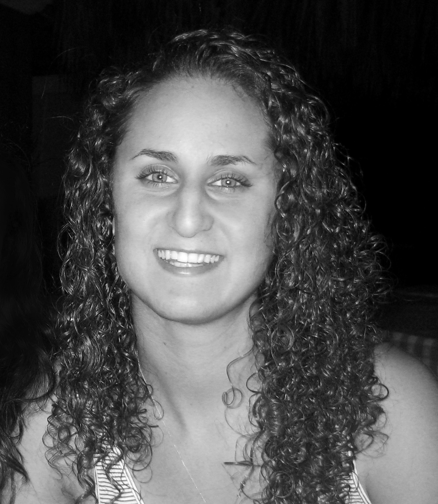

Liz Cohen

I have 3 main passions in life.
In no particular order:
Design, Fitness and Coffee.
Design
I have a BFA from Cleveland Institute of Art. Yep, I'm from Ohio, and yes, people in the midwest smile a lot :) I live for the details and am a sucker for good typography. I'm looking to shift from visual design to UX and product..SI seems like a great place to make it happen.
Fitness
I am always moving, working out and being active. I like to run, I plan on biking from Somerville to SI everyday (we'll see how that works out), I climb, I do yoga, I live for a good adventure - preferrably outdoors.
Coffee
Not just any coffee. Good coffee. Specialty coffee. Single-origin light roasts, small batch, freshly roasted. Preferrably brewed in a chemex or an aeropress. Or a solid shot of espresso. I am, admittedly, a coffee snob. Sorry, I'm not sorry.